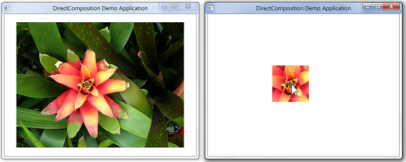

[!NOTE] For apps on Windows 10, we recommend using Windows.UI.Composition APIs instead of DirectComposition. For more info, see Modernize your desktop app using the Visual layer.
This topic demonstrates how to use a rectangle clip object to clip a visual or visual tree.
The example in this topic defines a rectangular clip that is centered at the mouse location, and applies the clip to a visual that is centered in the client area of the composition target window. This screen shot shows the result of applying the rectangle clip object to the visual.

For more information, see How to initialize DirectComposition.
Use the IDCompositionDevice::CreateRectangleClip method to create an instance of the rectangle clip object.
HRESULT hr = S_OK;
// Create the rectangle clip object.
if (m_pClip == NULL)
{
hr = m_pDevice->CreateRectangleClip(&m_pClip);
}
Call the methods of the rectangle clip object's IDCompositionRectangleClip interface to set the properties of the clip rectangle.
The following example defines a clip rectangle that is centered around the current mouse location. The m_offsetX and m_offsetY member variables contain the values of the OffsetX and OffsetY properties of the visual.
if (SUCCEEDED(hr))
{
// Get the location of the mouse.
POINT ptMouse = { };
GetCursorPos(&ptMouse);
ScreenToClient(m_hwnd, &ptMouse);
// Create a 100-by-100 pixel rectangular clip that is
// centered at the mouse location, and is mapped to
// the rectangle of the visual.
m_pClip->SetLeft((ptMouse.x - m_offsetX) - 50.f);
m_pClip->SetTop((ptMouse.y - m_offsetY) - 50.f);
m_pClip->SetRight((ptMouse.x - m_offsetX) + 50.f);
m_pClip->SetBottom((ptMouse.y - m_offsetY) + 50.f);
}
Note that the IDCompositionRectangleClip interface includes the following methods for defining a clip rectangle that has rounded corners:
Use the IDCompositionVisual::SetClip method to associate the Clip property of the visual with the rectangle clip object.
if (SUCCEEDED(hr))
{
// Set the rectangle clip object as the Clip property
// of the visual.
hr = m_pVisual->SetClip(m_pClip);
}
Call the IDCompositionDevice::Commit method to commit the batch of commands to Microsoft DirectComposition for processing. The result of applying the clip rectangle appears in the target window.
if (SUCCEEDED(hr))
{
// Commit the visual to be composed and displayed.
hr = m_pDevice->Commit();
}
Be sure to free the rectangle clip object when you no longer need it, as well as the device object, the composition target object, and any visual objects. The following example calls the application-defined SafeRelease macro to free the DirectComposition objects.
SafeRelease(&m_pClip);
SafeRelease(&m_pDevice);
SafeRelease(&m_pD3D11Device);
SafeRelease(&m_pCompTarget);
SafeRelease(&m_pVisual);
SafeRelease(&m_pSurface);
Â
Â